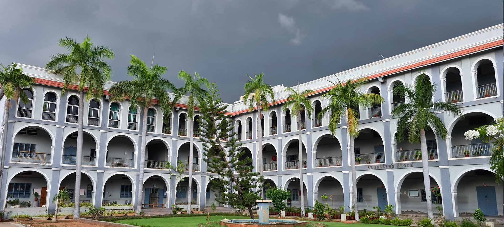

Puducherry Technological University

The place where my Under-Graduate Studies started right after my schooling. Started off in 2020, pursuing my Bachelor of Technology with Majors in the field of Mechatronics and Minors in the field of Computer Science and Engineering. I acquired a solid CGPA of 9.22 in my UG programme. My programme is a multidisciplinary field that combines mechanical engineering, electronics and computer science, and control engineering, equipping me with the skills required to design and develop intelligent systems and automated processes. Through hands-on projects and lab practical experiences, I have learned how to integrate hardware and software to create innovative solutions that enhance efficiency and functionality in various applications. Additionally this place, helped me gain leadership as well as collaborative skills, by helping and working together with teammates and other classmates and organizing several events. And I also gained many friends from various departments and overall I enjoyed learning here.
Petit Seminaire Higher Secondary School
I completed my schooling at Petit Seminaire Higher Secondary School from 2006 to 2020, where I received a solid foundation in academics and personal development. The supportive and engaging environment allowed me to explore a variety of subjects and interests while forming lasting friendships. The school’s emphasis on academic excellence fostered a love for learning, encouraging me to delve deeply into subjects like science and mathematics, which sparked my interest in engineering and technology. In addition to academics, I participated in various extracurricular activities, including sports, debates, and cultural events, which helped me develop leadership skills and teamwork. The diverse community at the school enriched my experience, exposing me to different perspectives and fostering a sense of belonging. The dedicated faculty played a crucial role in my growth, providing guidance and mentorship that inspired me to pursue my passions. This experience not only prepared me for my future studies but also instilled in me a sense of discipline, resilience, and a lifelong commitment to personal growth. My time at Petit Seminaire Higher Secondary School has been instrumental in shaping my values and aspirations as I move forward in my academic journey.